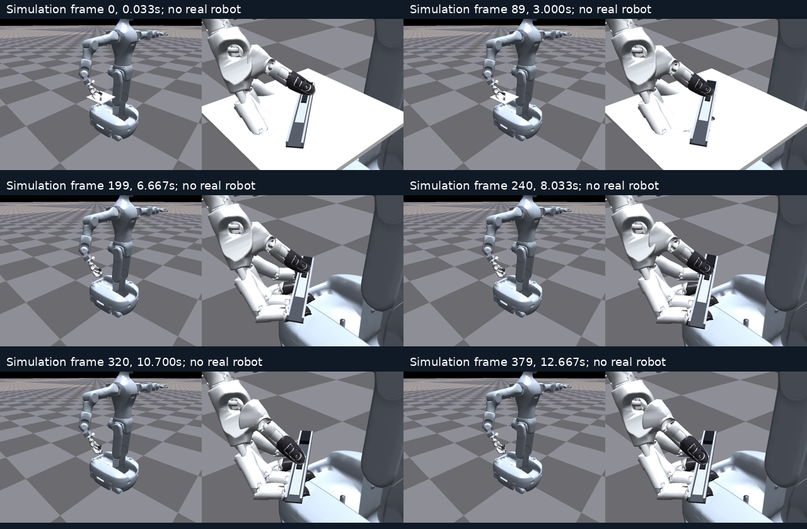
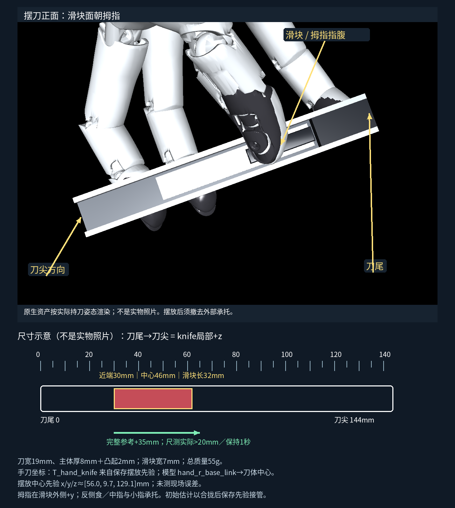

G2真实接口仍阻塞，真机未运动。此页视频是有限执行器物理仿真；SDK fixture不能代表现场接触或时延。
准确现场指南 · 逐项核查 · 命名目标／坐标合同 · 保留v2短推及延迟失败证据
本轮只新增一条完整物理全段。实际32.420mm，保持1.033秒，末1秒波动0.0277mm；原动态敏感性未解决。0–3秒合拢并撤临时托板，3–6.667秒独立保持／真实历史／隔离预热，6.667秒起在线推动，约10.7秒后保持。
双视角同步380帧／12.667秒，1920×720；无状态恢复、无滑块真值进策略。已核对顺序关键帧及原始接触／行程，不把抽帧称为完整GUI观看。


尺寸示意及原生持刀渲染，不是实物照片。滑块近端距尾30mm，中心46mm。Wuji开姿／握姿／实际q与G2目标／实测明确分开；probe后取刀复位并建立新历史。